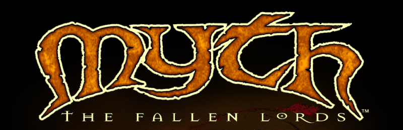

Steamed Myth
Steamed Myth Apple on Deck
Apple on Deck Keyboard Waffle
Keyboard Waffle Clan 9 From Outer Space
Clan 9 From Outer Space PlanetQuake Interview
PlanetQuake Interview Custom Maps @ kitty1
Custom Maps @ kitty1 ClanRing Tourney 3 Demos
ClanRing Tourney 3 DemosSteamed Myth
(One more "project post", for something I just put a bow on today.)
Excuse a brief preamble:
Back in the 90's when the original Quake buzz died down a bit (with Quake 2 coming out), I ended up rolling into Myth:TFL as my next internet game obsession.
Mechanically & aesthetically it couldn't be less like Quake, but in lots of ways it ticked the important boxes: always games ready to go online, side-by-side with "hangout" spaces; a constant fizz of news and drama and community creations; tournaments and player celebrities; a chatty development studio... plus some non-Quakey bonuses like story/lore to dissect.
Since then, another similarity with Quake is that a hardcore community-developer contingent has kept Myth playable on modern machines. Not exactly Myth:TFL (although that still more or less works); the lion's share of the work has gone into its sequel Myth 2. That's fine though because a) Myth 2 is also cool and b) the entire Myth:TFL campaign and its multiplayer maps/modes are playable using the Myth 2 engine these days.
So Myth 2 is something I've always had installed on one or more computers around the house. I don't go back to it as frequently as some of my old favorite FPS games but it's a classic.
When I got my hands on a Steam Deck recently -- and started getting into customizing it and loading various non-Steam games and tweaking the control mappings -- I kinda had to see how Myth 2 would play there. Like... would it technically run OK, that's sort of interesting, but more specifically the Myth games famously have a controls learning curve even with mouse+keyboard. Could one cram the Myth 2 control scheme into the Steam Deck's input map and actually have an enjoyable run through its singleplayer campaign?
...yep!
(that's a link, click it!) is the result of going down that rabbit hole, probably too far. But hey another Quake analogy is that I've always been a wee bit too easily entertained figuring out my perfect control bindings.Both the control scheme and the documentation are wayyyy over-engineered for the level of use they are likely to get from anyone other than me. Sometimes that's part of the fun though, right? You gotta do something in the way that it wants to be done.

 ) except where indicated otherwise
) except where indicated otherwise